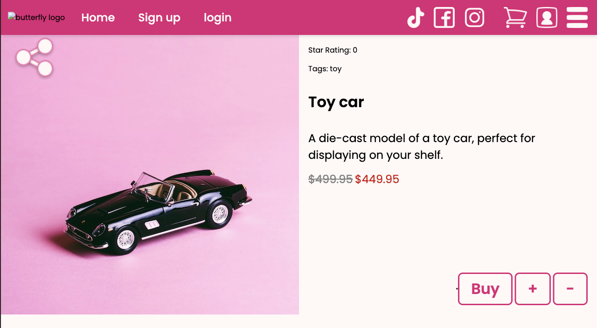
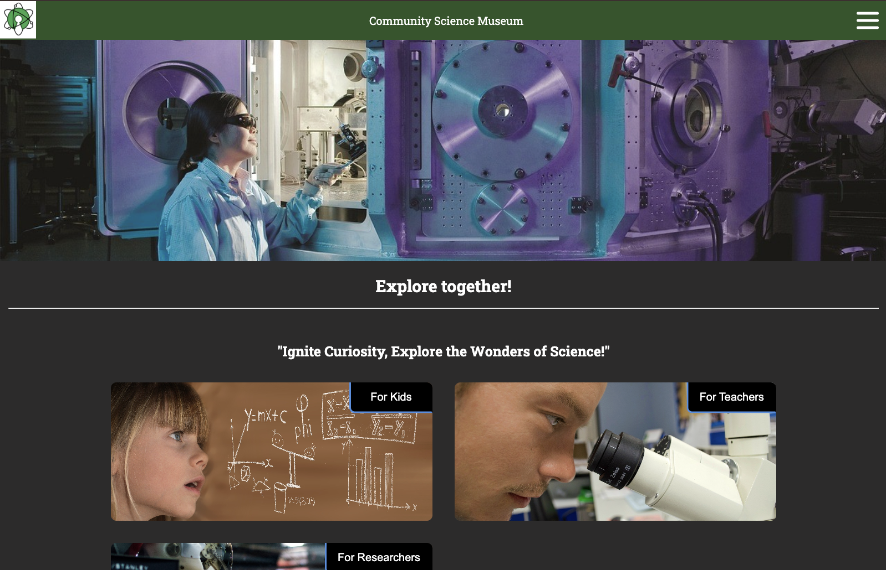
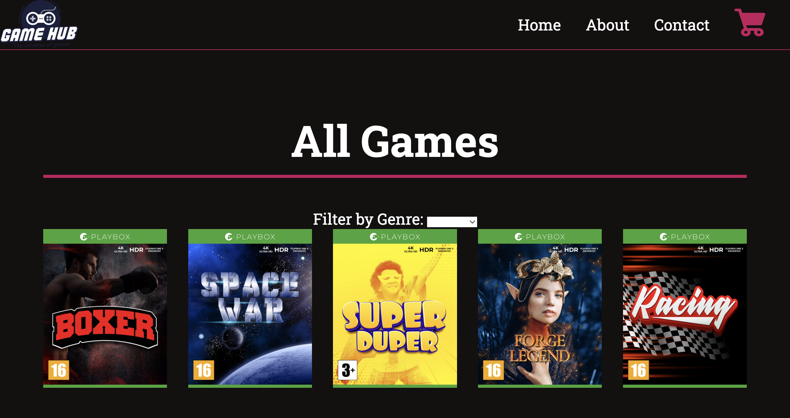

Front End Developer
Henriette Egeberg Kristensen
About Me
I’m a Front-End Developer specializing in helping small and newly opened businesses in the food industry establish a strong online presence. With experience as a pastry chef, waitress, and across multiple service roles, I understand your industry from the inside — and I use that insight to craft websites that fit your business perfectly.
*Cover letter* *CV*Projects
Community Museum
This is my semester project from fall 2024. Its a website for a Community Museum
*Github Link* *Demo Link*

